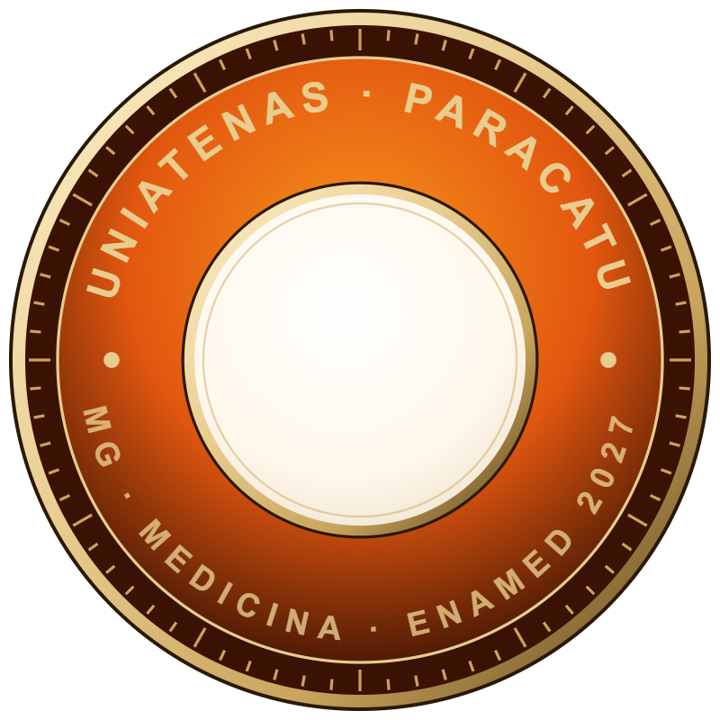

Boa tarde, Beatriz

Visão geral da instituição
projetado 4º simulado · 01/10Visão Geral
Projeção para o ENAMED
estimativa · não é resultado oficial do INEP
{{ k.titulo }}
{{ k.hint }}
{{ k.valor }}
{{ k.suf }}
{{ k.delta }} vs anterior
Evolução da proficiência média
tracejado = proficiente (60)
{{ chartEl }}
- Conceito ENAMED previsto
- Projeção institucional na escala 1 a 5, derivada do % de alunos proficientes no simulado. Com 2+ simulados é comparativo por simulado, nunca média.
- Proficiência (0 a 100)
- Nota na escala TRI do simulado. É a mesma métrica que o pedido chamou de "TRI projetado"; o Gestor não usa "Nota TRI" como métrica separada.
- Proficiente
- Aluno com proficiência 60 ou mais. Quem não fez aparece como —, nunca como zero.
- Percentual de acerto
- Resultado observado: questões certas sobre respondidas. Crítico abaixo de 50%, excelente a partir de 80%.
Temas críticos da turma {{ temasTotal }}
Nenhum tema crítico neste recorte
Nenhum tema abaixo de 50% de acerto.
#TemaGrande áreaPrevalênciaAcerto da turmaRespostasAlunos < 50%
Evolução no tema
{{ t.evol }}
Questões do tema no 4º simulado
{{ t.qs }}
Ações
Mostrando {{ temasVis.length }} de {{ temasFiltrados }}
Alunos
AlunoSemestreProficiência 1º → 4ºAcerto 4ºÚltimo acesso
Nenhum aluno neste recorte.
Mostrando {{ linhas.length }} de {{ totalRecorte }} · — = não participou
Detalhamento de simulados
Escolha um ou mais simulados para ver o desempenho questão por questão.- Percentual de acerto
- Questões certas sobre respondidas; anulada fica fora.
- Conceito e TRI projetados
- Estimativas por simulado, não resultado oficial do INEP. Proficiente = 60 ou mais.
- Prevalência
- Peso do tema na prova: Alta 62%, Média 28%, Baixa 10%.
{{ k.titulo }}
{{ k.valor }}{{ k.suf }}
{{ k.rodape }}
Acerto por prevalência
% de acerto da turma por grande área, separado pela prevalência dos temas na prova.{{ p.l }}{{ p.v }}
Grande áreaAltaMédiaBaixa
{{ r.area }}
{{ c.v }}
Diagnóstico da IA
{{ iaRef }}{{ iaResumo }}
O que olhar primeiro- {{ i.b }} {{ i.t }}
Revise antes de compartilhar.
Visão de alunos
{{ vaResumo }}AlunoSemestre% de acertoProficiênciaLimiarSituação
Nenhum aluno neste filtro.
Detalhamento das questões
{{ dqTotal }}Sessões de mentoria
Pauta
Sem itens na pauta.
Nenhuma sessão neste filtro.
Canais
Grupo de WhatsApp · PRO ENAMED UniAtenas
Rotina semanal de 12 a 16/10 · 1 enquete e 1 pérola por semana
{{ r.diaLongo }} · {{ r.label }}
{{ r.conteudo }}
{{ r.stLabel }}
Envie como seu, sem "encaminhar".
Canais gerais
Mural no Academy
{{ h.titulo }}{{ h.tag }}{{ h.data }}
Comitê pedagógico · UniAtenas
{{ x.nome }}{{ x.motivo }}{{ x.data }}
Intervenções
{{ col.label }}
{{ col.n }}Notas de handoff · Mentor B2B
Fontes: pedido do Léo (Slack, 14/10), síntese Felipe → Léo (30/09), Novo planejamento pedagógico B2B (Notion, 11/10), glossário "Entenda as métricas" (Task 30b), regras.ts e rotulos.ts do Portal do Gestor.
{{ g.titulo }}
{{ i.k }}{{ i.v }}